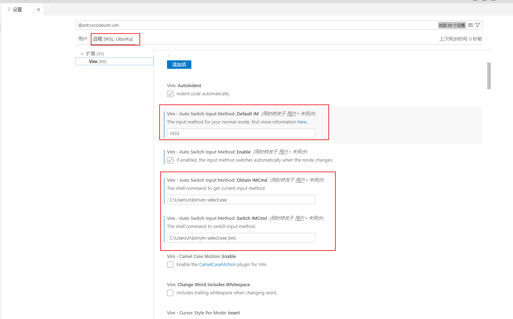

vscode 下的 vim 扩展插件(vscodevim) 在 windows 下使用 wsl/ssh 远程开发时，设置的自动切换 windows 输入法无效，分析了下源码发现跟自动切换输入法相关的几个设置项，其 scope 被设置为了 machine：
https://github.com/VSCodeVim/Vim/blob/15dbe0b415f269a5be14dc74651a69b9334fba14/package.json#L1064
涉及到的设置项有：
- vim.autoSwitchInputMethod.defaultIM
- vim.autoSwitchInputMethod.switchIMCmd
- vim.autoSwitchInputMethod.obtainIMCmd
翻阅 vscode 插件开发文档后了解到，当某个配置项的 scope 属性被设置为 machine 时，这意味着此配置项只在 vscode 核心具体工作的那台机器上生效，本地开发时自然是读取正常，但当进行 wsl/ssh 远程开发时，vscode 真正的核心(vscode-server)是在远程主机里工作的，本地可见的 vscode 只是个客户端或者说个空外壳，所以上述几个配置应该在远程主机中设置。
同时 vim 扩展插件的插件类型(extensionKind)被设置为了 ui 类，也就是说 vim 插件只工作 vscode UI 所在的地方，即只工作在客户端/空外壳上。
综上所述，进行远程开发时，vim 插件(其他插件也是这样)中提供的配置项，scope 属性为 machine 的配置需要在远程主机中设置，vscode 提供了这种操作的界面，如下图所示：

需要注意的是，设置项的值应该跟在 windows 本地做开发的值是一样的，因为 vim 插件只工作在本地，只是需要从远程主机上读取这些配置(这一点设计的很奇怪)。
另外吐槽几句，vscodevim 这个插件目前是 vscode 中提供 vim 功能最完整的插件了，但是感觉 github 上的项目管理者对 PR 的审核很草率，经常引入进来新的 bug，让人头大。
而且感觉项目没什么人维护了，也不发布新版本，前端时间我提了个修复 bug 的 PR，来解决启用自动切换输入法功能时，按 s 或 c 键修改光标下的文本后，没有立即进入 insert 模式的问题，这导致继续输入后会有非预期的文本被替换掉，PR 早就合并了，但已经过去很长时间了，也没有新的 release 出来，上一个 release 版本是在 3 月初发布的，距今已经将近 4 个月。
github 上遗留了一大堆 issue 无人处理，已发布版本中各种小 bug 也没人修复，唉。
除了 vscodevim 另一个风评不错的 vim 插件是 vscode-neovim，安装体验了一把，着实还欠缺火候，不推荐使用。